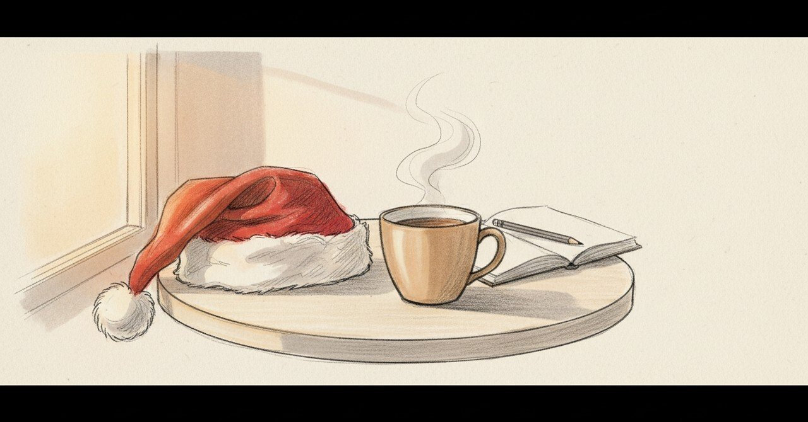

職場でサンタクロースになった夜から、行きつけのカフェで涙が溢れた日まで

2024年12月24日、0時09分、ノートに「子どもがたくさん笑顔になってくれたからとても嬉しかった」と書いた。
今日の現場
2026年1月16日、行きつけのカフェに顔を出した。今年まだ行けていなかった。営業時間はあまりなかったけど、少しだけ寄った。
そこで、悩んで悩んで以前私に相談してくれた人に会った。その人が、少し前向きになれている、と話してくれた。
その瞬間に、涙が溢れた。
「そんなに泣いてくれるなんて。。」と言われた。「特に何もしていないけどそれでも助けられた」と言われた。
ノートにはこう書いている。
「自分の価値を再認識したし確かにこれでいいんだって感覚」
その日は他にもいろいろやった。バリューランタンを書き直して、新しいコワーキングスペースに行って、走って、見知らぬ人にも声をかけた。「とても熱い一日だよ」と書いている。マッチングアプリを退会した日でもあった。
特に何もしていないけど助けられた、というのは、たぶん本当だ。私は「いた」だけだ。相談を聞いて、ただ。それでも、相手はそれを「助かった」と呼んでくれた。
あの頃と今
1年と3週間前のノートに戻る。
「0時09分。今朝は上司の電話から始まり、別の同僚からの電話で衝撃を受けて一日考えてしまったなー。楽しみである半面、やはり不安も少なからずあるよなー。どうにかして乗り越えないと」
「でも朝から筋トレもやったし、ヨガも瞑想もできたから良い１日の始まりだった」
「サンタクロースに扮して、職場の館内を巡ったのは楽しかった。もう少し一般参加のサンタがいればよかったのになー。でもそんな中でも子どもがたくさん笑顔になってくれたからとても嬉しかった」
「そして、また一つ自分のやるって決めたことが達成できたからうれしい。来年は自分史上最高な1年になりそうだ」
その夜の私は、子どもたちが笑顔になってくれたことに「嬉しかった」と書いた。「やるって決めたことが達成できた」とも書いた。誰かを喜ばせる行為が、そのまま自分の達成として返ってきていた。
頭の中
サンタクロースの夜の私は、衣装を着て、館内を巡って、笑顔をもらった。
カフェの日の私は、衣装は着ていなかった。ただ「行きつけ」と呼べるカフェに、年明けまだ行けていないからと寄った。そこでたまたま再会して、相手が「助かった」と泣いてくれた。
派手な仕立ては、後者にはなかった。それでも、自分の価値を確かめた、という意味で、たぶん同じくらい強い経験だった。
別の見方もある。サンタクロースで笑顔を集めるのは、私の用意した装置で起きる。カフェで涙が溢れたのは、装置がないところで起きた。装置がない場面で「助かった」と言われたほうが、自分にとって地に足のついた手応えなのかもしれない。
まだ途中のこと
子どもの笑顔と、相談者の涙、どちらが「自分の価値」かは、たぶん決められない。両方とも、確かに私を温めた。
「特に何もしていない」と言われたのは、たぶんそれが本当の意味で「いた」と呼べる時間だったからだ。装置を作る側もやる。装置のないところで「いる」側もやる。両方を持っていたい。
こうした記録を続けています。よければ、また読みに来てください。
#日記 #カフェ #人間関係 #伴走 #AkariLab